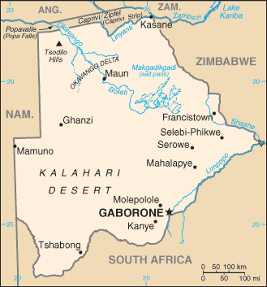

Africa :: BOTSWANA
Introduction :: BOTSWANA
-
Formerly the British protectorate of Bechuanaland, Botswana adopted its new name at independence in 1966. More than four decades of uninterrupted civilian leadership, progressive social policies, and significant capital investment have created one of the most stable economies in Africa. The ruling Botswana Democratic Party has won every election since independence; President Ian KHAMA was reelected for a second term in 2014. Mineral extraction, principally diamond mining, dominates economic activity, though tourism is a growing sector due to the country's conservation practices and extensive nature preserves. Botswana has one of the world's highest known rates of HIV/AIDS infection, but also one of Africa's most progressive and comprehensive programs for dealing with the disease.
Geography :: BOTSWANA
-
Southern Africa, north of South Africa22 00 S, 24 00 EAfricatotal: 581,730 sq kmland: 566,730 sq kmwater: 15,000 sq kmcountry comparison to the world: 49slightly smaller than Texastotal: 4,347.15 kmborder countries (4): Namibia 1,544 km, South Africa 1,969 km, Zambia 0.15 km, Zimbabwe 834 km0 km (landlocked)none (landlocked)semiarid; warm winters and hot summerspredominantly flat to gently rolling tableland; Kalahari Desert in southwestmean elevation: 1,013 melevation extremes: lowest point: junction of the Limpopo and Shashe Rivers 513 mhighest point: Tsodilo Hills 1,489 mdiamonds, copper, nickel, salt, soda ash, potash, coal, iron ore, silveragricultural land: 45.8%arable land 0.6%; permanent crops 0%; permanent pasture 45.2%forest: 19.8%other: 34.4% (2011 est.)20 sq km (2012)the population is primarily concentrated in the east with a focus in and around the captial of Gaborone, and the far central-eastern city of Francistown; population density remains low in other areas in the country, especially in the Kalahari to the westperiodic droughts; seasonal August winds blow from the west, carrying sand and dust across the country, which can obscure visibilityovergrazing; desertification; limited freshwater resourcesparty to: Biodiversity, Climate Change, Climate Change-Kyoto Protocol, Desertification, Endangered Species, Hazardous Wastes, Law of the Sea, Ozone Layer Protection, Wetlandssigned, but not ratified: none of the selected agreementslandlocked; population concentrated in eastern part of the country
People and Society :: BOTSWANA
-
2,214,858note: estimates for this country explicitly take into account the effects of excess mortality due to AIDS; this can result in lower life expectancy, higher infant mortality, higher death rates, lower population growth rates, and changes in the distribution of population by age and sex than would otherwise be expected (July 2017 est.)country comparison to the world: 144noun: Motswana (singular), Batswana (plural)adjective: Motswana (singular), Batswana (plural)Tswana (or Setswana) 79%, Kalanga 11%, Basarwa 3%, other, including Kgalagadi and white 7%Setswana 77.3%, Sekalanga 7.4%, Shekgalagadi 3.4%, English (official) 2.8%, Zezuru/Shona 2%, Sesarwa 1.7%, Sembukushu 1.6%, Ndebele 1%, other 2.8% (2011 est.)Christian 79.1%, Badimo 4.1%, other 1.4% (includes Baha'i, Hindu, Muslim, Rastafarian), none 15.2%, unspecified 0.3% (2011 est.)Botswana has experienced one of the most rapid declines in fertility in sub-Saharan Africa. The total fertility rate has fallen from more than 5 children per woman in the mid 1980s to approximately 2.4 in 2013. The fertility reduction has been attributed to a host of factors, including higher educational attainment among women, greater participation of women in the workforce, increased contraceptive use, later first births, and a strong national family planning program. Botswana was making significant progress in several health indicators, including life expectancy and infant and child mortality rates, until being devastated by the HIV/AIDs epidemic in the 1990s.Today Botswana has the third highest HIV/AIDS prevalence rate in the world at approximately 22%, however comprehensive and effective treatment programs have reduced HIV/AIDS-related deaths. The combination of declining fertility and increasing mortality rates because of HIV/AIDS is slowing the population aging process, with a narrowing of the youngest age groups and little expansion of the oldest age groups. Nevertheless, having the bulk of its population (about 60%) of working age will only yield economic benefits if the labor force is healthy, educated, and productively employed.Batswana have been working as contract miners in South Africa since the 19th century. Although Botswana’s economy improved shortly after independence in 1966 with the discovery of diamonds and other minerals, its lingering high poverty rate and lack of job opportunities continued to push workers to seek mining work in southern African countries. In the early 1970s, about a third of Botswana’s male labor force worked in South Africa (lesser numbers went to Namibia and Zimbabwe). Not until the 1980s and 1990s, when South African mining companies had reduced their recruitment of foreign workers and Botswana’s economic prospects had improved, were Batswana increasingly able to find job opportunities at home.Most Batswana prefer life in their home country and choose cross-border migration on a temporary basis only for work, shopping, visiting family, or tourism. Since the 1970s, Botswana has pursued an open migration policy enabling it to recruit thousands of foreign workers to fill skilled labor shortages. In the late 1990s, Botswana’s prosperity and political stability attracted not only skilled workers but small numbers of refugees from neighboring Angola, Namibia, and Zimbabwe.0-14 years: 31.95% (male 357,003/female 350,657)15-24 years: 18.91% (male 207,209/female 211,629)25-54 years: 38.45% (male 401,082/female 450,437)55-64 years: 5.46% (male 51,195/female 69,835)65 years and over: 5.23% (male 50,206/female 65,605) (2017 est.)total dependency ratio: 55.1youth dependency ratio: 49.3elderly dependency ratio: 5.8potential support ratio: 17.3 (2015 est.)total: 24.5 yearsmale: 23.5 yearsfemale: 25.6 years (2017 est.)country comparison to the world: 1691.55% (2017 est.)country comparison to the world: 7022.1 births/1,000 population (2017 est.)country comparison to the world: 719.6 deaths/1,000 population (2017 est.)country comparison to the world: 493 migrant(s)/1,000 population (2017 est.)country comparison to the world: 35the population is primarily concentrated in the east with a focus in and around the captial of Gaborone, and the far central-eastern city of Francistown; population density remains low in other areas in the country, especially in the Kalahari to the westurban population: 58% of total population (2017)rate of urbanization: 1.38% annual rate of change (2015-20 est.)GABORONE (capital) 247,000 (2014)at birth: 1.03 male(s)/female0-14 years: 1.04 male(s)/female15-24 years: 0.99 male(s)/female25-54 years: 1.15 male(s)/female55-64 years: 0.82 male(s)/female65 years and over: 0.66 male(s)/femaletotal population: 1.04 male(s)/female (2016 est.)19 years (2007 est.)129 deaths/100,000 live births (2015 est.)country comparison to the world: 66total: 29.6 deaths/1,000 live birthsmale: 32.2 deaths/1,000 live birthsfemale: 26.9 deaths/1,000 live births (2017 est.)country comparison to the world: 65total population: 63.3 yearsmale: 61.2 yearsfemale: 65.5 years (2017 est.)country comparison to the world: 1942.56 children born/woman (2017 est.)country comparison to the world: 7752.8%note: percent of women aged 12-49 (2007/08)5.4% of GDP (2014)country comparison to the world: 1290.38 physicians/1,000 population (2012)1.8 beds/1,000 population (2010)improved:urban: 99.2% of populationrural: 92.3% of populationtotal: 96.2% of populationunimproved:urban: 0.8% of populationrural: 7.7% of populationtotal: 3.8% of population (2015 est.)improved:urban: 78.5% of populationrural: 43.1% of populationtotal: 63.4% of populationunimproved:urban: 21.5% of populationrural: 56.9% of populationtotal: 36.6% of population (2015 est.)21.9% (2016 est.)country comparison to the world: 3360,000 (2016 est.)country comparison to the world: 183,900 (2016 est.)country comparison to the world: 36degree of risk: highfood or waterborne diseases: bacterial diarrhea, hepatitis A, and typhoid fevervectorborne disease: malaria (2016)18.9% (2016)country comparison to the world: 11411.2% (2007)country comparison to the world: 669.6% of GDP (2009)country comparison to the world: 5definition: age 15 and over can read and writetotal population: 88.5%male: 88%female: 88.9% (2015 est.)total: 13 yearsmale: 13 yearsfemale: 13 years (2013)total: 36%male: 29.6%female: 43.5% (2010 est.)
Government :: BOTSWANA
-
conventional long form: Republic of Botswanaconventional short form: Botswanalocal long form: Republic of Botswanalocal short form: Botswanaformer: Bechuanalandetymology: the name Botswana means "Land of the Tswana" - referring to the country's major ethnic groupparliamentary republicname: Gaboronegeographic coordinates: 24 38 S, 25 54 Etime difference: UTC+2 (7 hours ahead of Washington, DC, during Standard Time)10 districts and 6 town councils*; Central, Chobe, Francistown*, Gaborone*, Ghanzi, Jwaneng*, Kgalagadi, Kgatleng, Kweneng, Lobatse*, North East, North West, Selebi-Phikwe*, South East, Southern, Sowa Town*30 September 1966 (from the UK)Independence Day (Botswana Day), 30 September (1966)history: previous 1960 (preindependence); latest adopted March 1965, effective 30 September 1966amendments: proposed by the National Assembly; passage requires approval in two successive Assembly votes with at least two-thirds majority in the final vote; proposals to amend constitutional provisions on fundamental rights and freedoms, the structure and branches of government, and public services also requires approval by majority vote in a referendum and assent by the president of the republic; amended several times, last in 2006 (2017)mixed legal system of civil law influenced by the Roman-Dutch model and also customary and common lawaccepts compulsory ICJ jurisdiction with reservations; accepts ICCt jurisdictioncitizenship by birth: nocitizenship by descent only: at least one parent must be a citizen of Botswanadual citizenship recognized: noresidency requirement for naturalization: 10 years18 years of age; universalchief of state: President Seretse Khama Ian KHAMA (since 1 April 2008); Vice President Mokgweetsi Eric MASISI (since 12 November 2014); note - the president is both chief of state and head of governmenthead of government: President Seretse Khama Ian KHAMA (since 1 April 2008); Vice President Mokgweetsi Eric MASISI (since 12 November 2014)cabinet: Cabinet appointed by the presidentelections/appointments: president indirectly elected by the National Assembly for a 5-year term (eligible for a second term); election last held on 24 October 2014 (next to be held in October 2019); vice president appointed by the presidentelection results: Seretse Khama Ian KHAMA elected president; percent of National Assembly vote - NAdescription: unicameral Parliament consists of the National Assembly (65 seats; 57 members directly elected in single-seat constituencies by simple majority vote, 6 nominated by the president and indirectly elected by simple majority vote by the rest of the National Assembly, and 2 ex-officio members - the president and attorney general; elected members serve 5-year terms); note - the House of Chiefs (Ntlo ya Dikgosi), an advisory body to the National Assembly, consists of 35 members - 8 hereditary chiefs from Botswana's principal tribes, 22 indirectly elected by the chiefs, and 5 appointed by the president; the House of Chiefs consults on issues including powers of chiefs, customary courts, customary law, tribal property, and constitutional amendmentselections: last held on 24 October 2014 (next to be held in October 2019)election results: percent of vote by party - BDP 46.5%, UDC 30.0%, BCP 20.4%, independent 3.1%; seats by party - BDP 37, UDC 17, BCP 3highest court(s): Court of Appeal, High Court (each consists of a chief justice and a number of other judges as prescribed by the Parliament)judge selection and term of office: Court of Appeal and High Court chief justices appointed by the president and other judges appointed by the president upon the advice of the Judicial Service Commission; all judges appointed to serve until age 70subordinate courts: Industrial Court (with circuits scheduled monthly in the capital city and in 3 districts); Magistrates Courts (1 in each district); Customary Court of Appeal; Paramount Chief's Court/Urban Customary Court; Senior Chief's Representative Court; Chief's Representative’s Court; Headman's CourtBotswana Alliance Movement or BAM [Ephraim Lepetu SETSHWAELO]Botswana Congress Party or BCP [Dumelang SALESHANDO]Botswana Democratic Party or BDP [Ian KHAMA]Botswana Movement for Democracy or BMD [Ndaba GAOLATHE]Botswana National Front or BNF [Duma BOKO]Botswana Peoples Party or BPP [Motlatsi MOLAPISI]Umbrella for Democratic Change or UDC [Duma BOKO] (coalition includes BMD, BPP, BCP and BNF)ACP, AfDB, AU, C, CD, FAO, G-77, IAEA, IBRD, ICAO, ICCt, ICRM, IDA, IFAD, IFC, IFRCS, ILO, IMF, Interpol, IOC, IOM, IPU, ISO, ITSO, ITU, ITUC (NGOs), MIGA, NAM, OPCW, SACU, SADC, UN, UNCTAD, UNESCO, UNIDO, UNWTO, UPU, WCO, WFTU (NGOs), WHO, WIPO, WMO, WTOchief of mission: Ambassador David John NEWMAN (since 3 August 2015)chancery: 1531-1533 New Hampshire Avenue NW, Washington, DC 20036telephone: [1] (202) 244-4990FAX: [1] (202) 244-4164consulate(s) general: Atlantachief of mission: Ambassador Earl R. MILLER (since 30 January 2015)embassy: Embassy Drive, Government Enclave (off Khama Crescent), Gaboronemailing address: Embassy Enclave, P. O. Box 90, Gaboronetelephone: [267] 395-3982FAX: [267] 318-0232light blue with a horizontal white-edged black stripe in the center; the blue symbolizes water in the form of rain, while the black and white bands represent racial harmonyzebra; national colors: blue, white, blackname: "Fatshe leno la rona" (Our Land)lyrics/music: Kgalemang Tumedisco MOTSETEnote: adopted 1966
Economy :: BOTSWANA
-
Until the global recession, Botswana maintained one of the world's highest economic growth rates since independence in 1966. Diamond mining fueled much of the economic expansion and currently accounts for one-quarter of GDP, approximately 85% of export earnings, and about one-third of the government's revenues. Tourism is the secondary earner of foreign exchange and many Batswana engage in subsistence farming and cattle rearing. Through fiscal discipline and sound management, Botswana transformed itself from one of the poorest countries in the world to a middle-income country with a per capita GDP of approximately $16,900 in 2016. Botswana also ranks as one of the best credit risks in Africa.Botswana's economy closely follows global economic trends because of its heavy reliance on a single luxury export. According to official government statistics, unemployment is around 20%, but unofficial estimates run much higher. De Beers, a major international diamond company, signed a 10-year deal with Botswana in 2012 and moved its rough stone sorting and trading division from London to Gaborone in 2013. The move was geared to support the development of Botswana's nascent downstream diamond industry.Botswana’s economy recovered from the 2008 global recession in 2010, but has only grown modestly since then, primarily due to the downturn in the global diamond market, though water and power shortages also played a role. The prevalence of HIV/AIDS is second highest in the world and threatens the country's impressive economic gains. In 2016, Botswana entered its fourth year of drought, detrimental to Botswana’s small, but vital agriculture sector, but diamond exports increased to their highest levels since 2013, buffering economic growth. As a result, the economy registered 2.9% growth in 2016.$37.21 billion (2016 est.)$35.23 billion (2015 est.)$35.45 billion (2014 est.)note: data are in 2016 dollarscountry comparison to the world: 121$15.57 billion (2016 est.)4.3% (2016 est.)-1.7% (2015 est.)4.1% (2014 est.)country comparison to the world: 102$17,300 (2016 est.)$16,800 (2015 est.)$17,200 (2014 est.)note: data are in 2016 dollarscountry comparison to the world: 9942.1% of GDP (2016 est.)40.5% of GDP (2015 est.)43.2% of GDP (2014 est.)country comparison to the world: 7household consumption: 47.8%government consumption: 18.2%investment in fixed capital: 31.2%investment in inventories: -10.4%exports of goods and services: 55.4%imports of goods and services: -42.2% (2016 est.)agriculture: 1.8%industry: 29.4%services: 68.8% (2016 est.)livestock, sorghum, maize, millet, beans, sunflowers, groundnutsdiamonds, copper, nickel, salt, soda ash, potash, coal, iron ore, silver; beef processing; textiles1.3% (2016 est.)country comparison to the world: 1361.187 million (2016 est.)country comparison to the world: 140agriculture: NA%industry: NA%services: NA%20% (2013 est.)17.8% (2009 est.)country comparison to the world: 18430.3% (2003 est.)lowest 10%: NA%highest 10%: NA%60.5 (2009)63 (1993)country comparison to the world: 6revenues: $5.13 billionexpenditures: $5.231 billion (2016 est.)34.2% of GDP (2016 est.)country comparison to the world: 60-0.7% of GDP (2016 est.)country comparison to the world: 6118.1% of GDP (2016 est.)19.3% of GDP (2015 est.)country comparison to the world: 1861 April - 31 March2.8% (2016 est.)3.1% (2015 est.)country comparison to the world: 1395.5% (31 December 2016)6% (31 December 2015)country comparison to the world: 757.3% (31 December 2016 est.)7.95% (31 December 2015 est.)country comparison to the world: 112$1.505 billion (31 December 2016 est.)$1.223 billion (31 December 2015 est.)country comparison to the world: 139$6.689 billion (31 December 2016 est.)$5.958 billion (31 December 2015 est.)country comparison to the world: 116$2.597 billion (31 December 2016 est.)$1.614 billion (31 December 2015 est.)country comparison to the world: 141$4.588 billion (31 December 2012 est.)$4.107 billion (31 December 2011 est.)$4.076 billion (31 December 2010 est.)country comparison to the world: 88$1.824 billion (2016 est.)$1.367 billion (2015 est.)country comparison to the world: 29$7.226 billion (2016 est.)$6.286 billion (2015 est.)country comparison to the world: 98diamonds, copper, nickel, soda ash, beef, textilesBelgium 18.9%, India 15.1%, South Africa 13.6%, Namibia 11.6%, UAE 9.7%, Israel 6.1%, Singapore 5.6%, Canada 5% (2016)$5.906 billion (2016 est.)$6.936 billion (2015 est.)country comparison to the world: 115foodstuffs, machinery, electrical goods, transport equipment, textiles, fuel and petroleum products, wood and paper products, metal and metal productsSouth Africa 64.5%, Namibia 10.5%, Canada 5.6% (2016)$7.189 billion (31 December 2016 est.)$7.546 billion (31 December 2015 est.)country comparison to the world: 82$2.421 billion (31 December 2016 est.)$2.148 billion (31 December 2015 est.)country comparison to the world: 148pulas (BWP) per US dollar -10.9022 (2016 est.)10.9022 (2015 est.)10.1263 (2014 est.)8.9761 (2013 est.)7.62 (2012 est.)
Energy :: BOTSWANA
-
population without electricity: 700,000electrification - total population: 66%electrification - urban areas: 75%electrification - rural areas: 54% (2013)2.789 billion kWh (2015 est.)country comparison to the world: 1363.722 billion kWh (2015 est.)country comparison to the world: 1300 kWh (2016 est.)country comparison to the world: 1041.468 billion kWh (2015 est.)country comparison to the world: 60134,000 kW (2015 est.)country comparison to the world: 17298.5% of total installed capacity (2015 est.)country comparison to the world: 370% of total installed capacity (2015 est.)country comparison to the world: 470% of total installed capacity (2015 est.)country comparison to the world: 1621.5% of total installed capacity (2015 est.)country comparison to the world: 1300 bbl/day (2016 est.)country comparison to the world: 1080 bbl/day (2014 est.)country comparison to the world: 920 bbl/day (2014 est.)country comparison to the world: 970 bbl (1 January 2017 es)country comparison to the world: 1080 bbl/day (2014 est.)country comparison to the world: 11823,000 bbl/day (2015 est.)country comparison to the world: 1350 bbl/day (2014 est.)country comparison to the world: 13221,290 bbl/day (2014 est.)country comparison to the world: 1160 cu m (2013 est.)country comparison to the world: 1060 cu m (2013 est.)country comparison to the world: 1560 cu m (2013 est.)country comparison to the world: 660 cu m (2013 est.)country comparison to the world: 890 cu m (1 January 2014 es)country comparison to the world: 1134.4 million Mt (2013 est.)country comparison to the world: 128
Communications :: BOTSWANA
-
total subscriptions: 142,122subscriptions per 100 inhabitants: 6 (July 2016 est.)country comparison to the world: 132total: 3,288,986subscriptions per 100 inhabitants: 149 (July 2016 est.)country comparison to the world: 131general assessment: Botswana is participating in regional development efforts; expanding fully digital system with fiber-optic cables linking the major population centers in the east as well as a system of open-wire lines, microwave radio relays links, and radiotelephone communication stations; the Botswana Telecommunications Corporation is rolling out 4G service to over 95 sites in the country that will improve network connectivitydomestic: fixed-line teledensity has declined in recent years and now stands at roughly 6 telephones per 100 persons; mobile-cellular teledensity now pushing 150 telephones per 100 personsinternational: country code - 267; international calls are made via satellite, using international direct dialing; 2 international exchanges; digital microwave radio relay links to Namibia, Zambia, Zimbabwe, and South Africa; satellite earth station - 1 Intelsat (Indian Ocean) (2016)2 TV stations - 1 state-owned and 1 privately owned; privately owned satellite TV subscription service is available; 2 state-owned national radio stations; 3 privately owned radio stations broadcast locally (2007).bwtotal: 869,610percent of population: 39.4% (July 2016 est.)country comparison to the world: 144
Transportation :: BOTSWANA
-
number of registered air carriers: 1inventory of registered aircraft operated by air carriers: 6annual passenger traffic on registered air carriers: 194,005annual freight traffic on registered air carriers: 94,729 mt-km (2015)A2 (2016)74 (2013)country comparison to the world: 70total: 10over 3,047 m: 22,438 to 3,047 m: 11,524 to 2,437 m: 6914 to 1,523 m: 1 (2017)total: 641,524 to 2,437 m: 5914 to 1,523 m: 46under 914 m: 13 (2013)total: 888 kmnarrow gauge: 888 km 1.067-m gauge (2014)country comparison to the world: 94total: 17,916 kmnote: includes 8,916 km of Public Highway Network roads (6,116 km paved and 2,800 km unpaved) and 9,000 km of District Council roads (2011)country comparison to the world: 117
Military and Security :: BOTSWANA
-
3.37% of GDP (2016)2.66% of GDP (2015)2.13% of GDP (2014)2.06% of GDP (2013)2.23% of GDP (2012)country comparison to the world: 34Botswana Defence Force (BDF): Ground Forces Command, Air Arm Command, Defense Logistics Command (2017)18 is the legal minimum age for voluntary military service; no conscription (2012)
Transnational Issues :: BOTSWANA
-
nonecurrent situation: Botswana is a source, transit, and destination country for women and children subjected to sex trafficking and forced labor; young Batswana serving as domestic workers, sometimes sent by their parents, may be denied education and basic necessities or experience confinement and abuse indicative of forced labor; Batswana girls and women also are forced into prostitution domestically; adults and children of San ethnicity were reported to be in forced labor on farms and at cattle posts in the country’s rural westtier rating: Tier 2 Watch List – Botswana does not fully comply with the minimum standards for the elimination of trafficking; however, it is making significant efforts to do so; an anti-trafficking act was passed at the beginning of 2014, but authorities did not investigate, prosecute, or convict any offenders or government officials complicit in trafficking or operationalize victim identification and referral procedures based on the new law; the government sponsored a radio campaign to familiarize the public with the issue of human trafficking (2015)